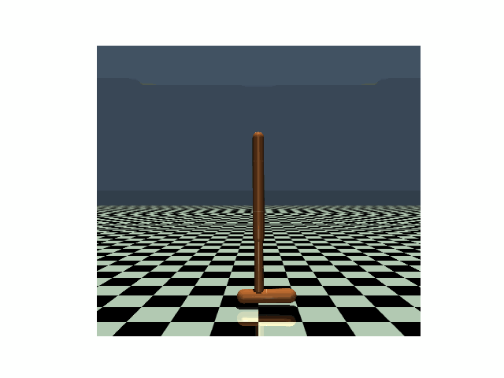
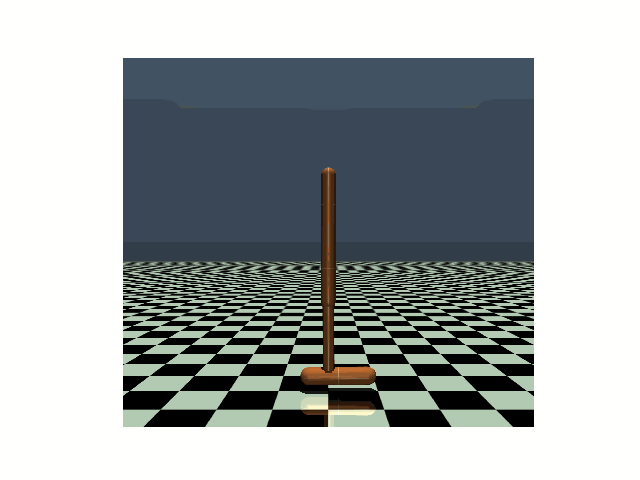
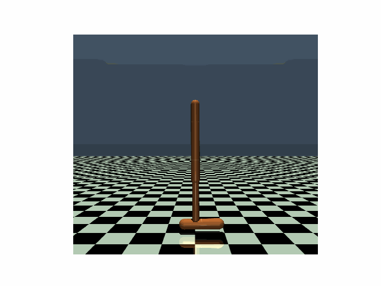
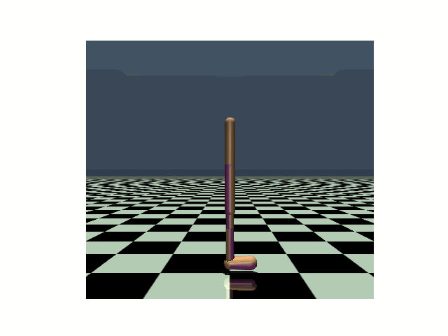
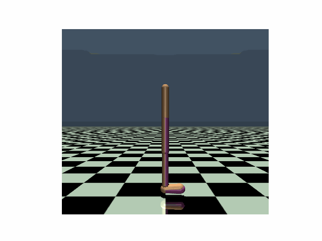
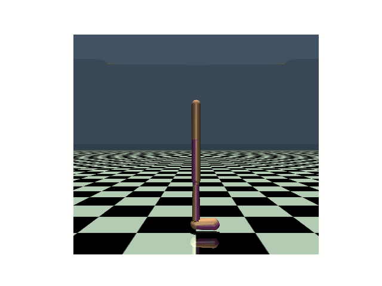

|  |  |  |  |  |  |
|---|---|---|---|---|---|
| Hopper, PPO clean reward: 3104 |
Hopper, PPO reward under strongest previous attack: 636 |
Hopper, PPO reward under our PA-AD attack: 171 |
Walker, PPO clean reward: 4630 |
Walker, PPO reward under strongest previous attack: 1048 |
Walker, PPO reward under our PA-AD attack: 813 |

| 
| 
| |||
| Pong, DQN clean reward: 21 (agent: right paddle) |
Pong, DQN reward under strongest previous attack: -14 |
Pong, DQN reward under our PA-AD attack: -21 |
Boxing, DQN clean reward: 94 (agent: left boxer) |
Boxing, DQN reward under strongest previous attack: 69 |
Boxing, DQN reward under our PA-AD attack: 8 |